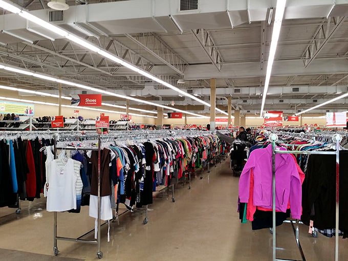

About Me
I’m passionate about designing sustainable water and environmental systems that balance human needs and ecosystem health. My work centers on stormwater management, wastewater treatment, and sustainability-driven infrastructure design.
Featured Projects
Town of Bedford Wiggins Avenue Extension, Primary Environmental Engineer
A multidisciplinary capstone project focused on designing a roadway extension to improve traffic flow and safety in the Town of Bedford. As the Primary Environmental Engineer, I led the stormwater management and environmental compliance components of the design..
Tools: AutoCAD • ArcGIS • Stormwater Design • BMP Integration • Technical Writing • Public Presentation
View Technical Memorandum
Campus Thrift Store Life Cycle Analysis
A sustainability-focused project analyzing the life-cycle environmental impacts of a proposed campus thrift store aimed at reducing textile and consumer waste. The analysis evaluated potential emissions, energy use, and material savings from extending product lifespans through reuse.
Tools: OpenLCA • EPA WARM • Sustainability Metrics • Excel
View Presentation Report
LA Basin Smog Case Study
This project investigates the 1943 Los Angeles Basin smog event — one of the earliest recorded severe photochemical smog episodes in the United States. The study explores the meteorological, topographical, and industrial factors that contributed to the buildup of oxidants and visibility reduction across the basin.
Tools: AERMOD • Gaussian Plume Modeling • Topographical Dispersion Analysis • EPA emission factors • Report Writing
View Presentation ReportCore Skills
- AutoCAD
- ArcGIS / QGIS
- EPA SWMM • HEC-RAS
- Excel • Microsoft Office
- Hydrologic & Hydraulic Analysis
- Teamwork & Leadership
- Presentation & Public Speaking
- Technical Writing Skills
Contact
Email: fiona_keady@student.uml.edu
LinkedIn: linkedin.com/in/fiona-keady